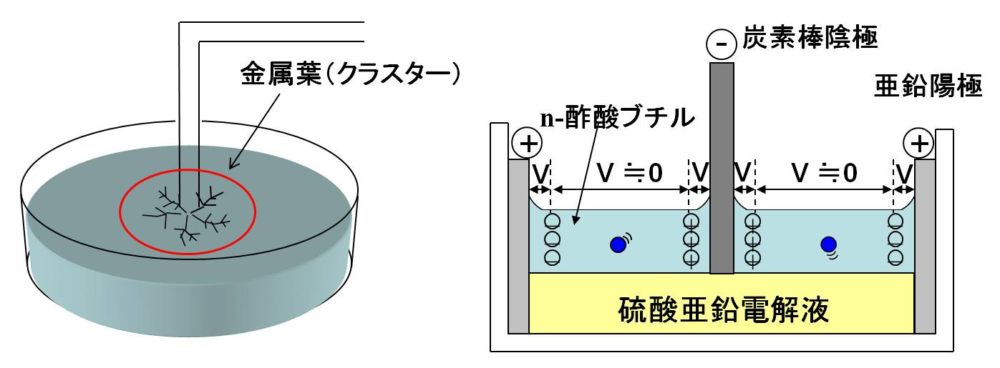
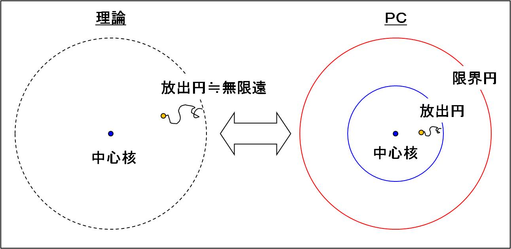
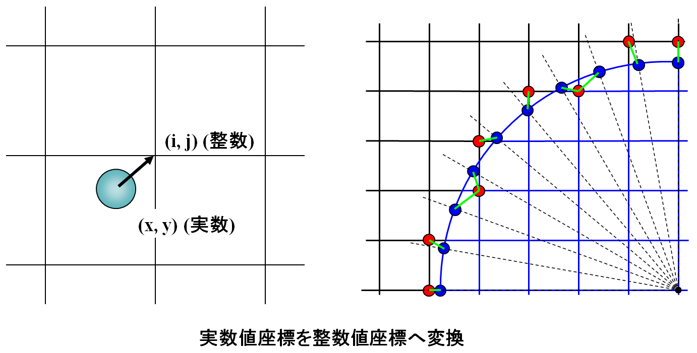

第１0回 数理工学実験２#
15 モンテカルロ法の応用（DLAモデル）#
今回はモンテカルロ法の応用としてDLA（diffusion-limitted aggregation）モデルのシミュレーションを作成してみます。まず初めにDLAモデルとはどのような現象をモデル化しているのか簡単に説明します。
参照文献：フラクタルの物理（I）（II）松下 貢 （裳華房），計算物理学 基礎編 小柳義夫 （朝倉書店）
15.1 DLAモデルとは#
DLAモデルとは、ブラウン運動する粒子（ブラウン粒子）が凝集・付着して大きなクラスターを形成するモデルとして提案され、クラスターの形状と質量の関係を説明する事に成功しました。その後、DLAは単にコロイド粒子の凝集だけでなく、雪の結晶成長、メッキなど電気化学の分野で知られる電析、2流体界面の不安定性に関係する粘性突起、バクテリアコロニー形成など一見関係がない多種多様な現象に深く関係している事が分かってます。
15.2 金属葉形成実験の説明#
図のように硫酸亜鉛などの電解質溶液中で陽極と陰極の間に直流電圧を加えると、一般に陽極の金属が溶けて陰極の表面に析出します（電析）。ところが、図のような装置で電析を行うと、金属亜鉛が陰極の先端から2液界面に沿って成長します（金属葉） 
金属葉の実験動画（明治大学：末松 J. 信彦）
15.3 DLAモデルによる金属結晶成長のシミュレーション#
上記で説明したDLAモデルを2次元格子上のランダムウォークを用いて具体的にシミュレーションし、金属葉のパターン形成の様子をアニメーションを用いて再現してみましょう。
DLAモデルの手順は「原理的には」以下の通りです。
ステップ1
座標系を決定し中心核を置き、中心核を中心とする放出円を設定する。ステップ2
円周上のランダムな位置を決め一つの粒子を置く。ステップ3
一つの粒子が2次元平面上をランダムウォークし中心核に接触した場合にランダムウォークを止めそこに留まる。ステップ4
ステップ2へ戻る。
上記のアルゴリズムがDLAシミュレーションの原理的な流れですが、実際にPCでDLAシミュレーションを実現するには、幾つかの工夫が必要となります。
問題15.1#
上記のアルゴリズムは粒子が一個ずつ中心核に付着するモデルとなっています。これは実際の金属結晶成長においてどのような状況を想定していると考えられるでしょうか？
15.4 理想的なDLAモデルとPC上で実現できるDLAモデルの違い#
理想的なDLAモデルとPC上で実現できるDLAモデルには大きな違いがあります。理論的には無限に遠い円周上からランダムウォークする粒子が核となる中心の粒子に付着することでクラスターが形成されます。理想的なDLAモデルはクラスターが無限に大きくなる事を想定してます。しかし、PC上では無限を表現できないので有限サイズで考える必要があります。ただし、初期位置を円周上にランダムに配置することを考えると、初期の円周半径はそれほど大きい必要はありません。クラスターより大きい円であれば問題ないといえます。一方、下図のようにPC上でDLAモデルをシミュレーションする場合、初期位置の円より大きい半径を持つ限界円を設定する必要があります。ランダムウォークする粒子が限界円の領域を越えた場合その粒子は捨て、新しい粒子を放出円上に取り新たにランダムウォークさせます。

15.5 実数で表されている円周上の座標を整数で表される格子上の座標に近似する#
このモデルでは初めに放出円の円周上のランダムな位置から粒子を放出します。しかし、放出円の円周の全ての点が2次元格子点に対応している訳ではありません。したがって、初めに実数扱いで放出円の円周上に置いてある粒子を2次元の格子点上に近似する必要があります。

それではまずはディスプレイ上に2次元2次元座標を表す格子を作成します。
"""2次元座標を表す格子を作成"""
import pygame
import numpy as np
if __name__=='__main__':
BLACK = (0, 0, 0)
WHITE = (255, 255, 255)
BLUE = (0, 0, 255)
GREEN = (0, 255, 0)
RED = (255, 0, 0)
"""ウインドウの初期化"""
pygame.init()
WINDOW_SIZE=(600, 600)
screen=pygame.display.set_mode(WINDOW_SIZE)
pygame.display.set_caption("DLA model")
"""格子の1辺の長さ"""
lat_size=20
x_lat_size=lat_size
y_lat_size=lat_size
num_lat=int(WINDOW_SIZE[0]/x_lat_size)
done=False
while not done:
for event in pygame.event.get():
if event.type == pygame.QUIT:
done = True
screen.fill(WHITE)
"""格子の表示"""
for i in range(num_lat+1):
pygame.draw.line(screen, BLACK, [i*x_lat_size, 0], [i*x_lat_size, WINDOW_SIZE[0]], 1)
pygame.draw.line(screen, BLACK, [0, i*y_lat_size], [WINDOW_SIZE[1], i*y_lat_size], 1)
pygame.display.flip()
#pygame.time.delay(10)
pygame.quit()
pygame 2.1.2 (SDL 2.0.16, Python 3.8.10)
Hello from the pygame community. https://www.pygame.org/contribute.html
問題15.2#
上での説明のように、円周上の点（実数で表される座標）をその点からもっとも近傍にある2次元格子点（整数で表される座標点）に近似するプログラムを作りなさい。
WINDOWサイズは\(400 \times 400\)、放出円の半径\(100\)、限界円の半径\(200\)とし放出円の円周上に10度ずつ36個の点が円周上の実数値座標から格子点上の整数値座標へ変換されるように工夫すること。
（ヒント）double型で表現された円周上の点(x_d, y_d)をint型で表現される2次元格子上の点(x_int, y_int)に代入するが、このままではただの切り捨てとなり円周上の点が最も近い格子上の点に近似されない。そこで、円周上の点に0.5 \(\times\)（格子間距離）を加えたものを2次元格子上の点に代入すればよい。
おまけ：アニメーショングラフィックの世界では実数値で表した物体の位置情報を画面の画素数（整数値）に合わせる必要がある場合があり、位置座標の実数値から画素数の整数値に変換する手法をラスタライズと呼びます。
問題15.3#
続いて、放出円の円周上のランダムな位置から出発した粒子が格子上をランダムウォークするプログラムを作成しましょう。
上で作成したプログラムに前回作成した2次元ランダムウォークのプログラムを組み込めばOKです
問題15.4#
中心とスタート円を決めスタート円の円周上のランダムな位置から、2次元格子上で一つの粒子をランダムウォークさせ、その動きを観察しなさい。その上で限界円が必要な理由について考察しなさい。
13.6 具体的に2次元格子上でのDLAモデルのプログラムを考える#
以上で、2次元格子上でのDLAモデル作成の準備は終わりました。これで、実際にPC上で2次元格子上のDLAモデルのシミュレーションが出来ます。そこで、具体的に2次元格子上でのDLAシミュレーションの手順を書きます。
ステップ1
座標系を決定し中心核を置き、中心核を中心とする「放出円」と「限界円」を設定するステップ2
円周上のランダムな位置を決め一つの粒子を置く。ステップ3
一つの粒子が2次元平面上をランダムウォークし中心核に接触した場合にランダムウォークを止めそこに留まり、限界円の範囲を逸脱した場合はその粒子を取り除く。ステップ4
ステップ2へ戻る。
先程との違いは、「限界円」に関係する条件判断が加わった事です。
レポート課題#
2次元格子上のDLAモデルを完成させなさい。
注意
粒子の付着条件はクラスターに所属する粒子の隣接格子に来た場合とする。
クラスターが放出円の大きさを越えないようにすること。
〆切：12/18（水）までにGoogle Classroomでjupyter notebook形式「id_学籍番号_10.ipynb」形式で送ること